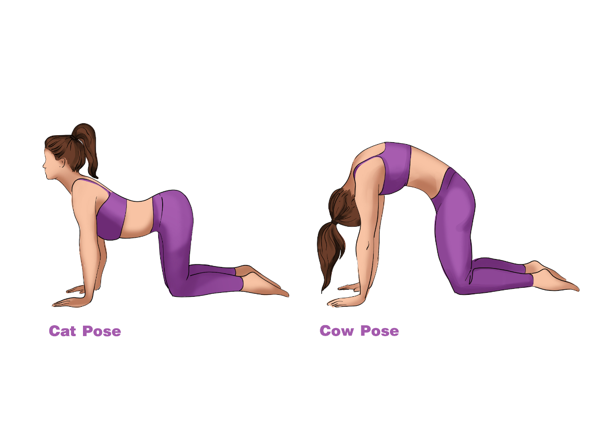

מתיחות בוקר על המיטה
5–10 דקות | לפני הקימה | כל יום
⏱ 5–10 דקות
🛏️ על המיטה
💡 עשה אותן לפני שאתה קם — הגוף עדיין חמים מהשינה
✅ נשימה עמוקה: שאף, ובנשיפה תן לגוף להתמתח עוד קצת

1
מתיחת עמוד שדרה — ברכיים לחזה
30 שניות
שכיבה על הגב. שתי ברכיים כפופות לחזה, חבק אותן בידיים. הרגע את הגב התחתון.
הגב התחתון נשטח לחלוטין — מושלם אחרי לילה של שינה

2
פיתול עמוד שדרה
30 שניות כל צד
שכיבה על הגב. ברך אחת מעל לצד הנגדי, כתפיים נשארות שטוחות. הסתכל לכיוון הנגדי.
אל תדחף בכוח — תן לכוח המשיכה לעשות את העבודה

3
מתיחת ירך (Figure 4)
30 שניות כל צד
שכיבה על הגב. קרסול רגל אחת על ברך הרגל השנייה. משוך את הרגל התומכת אליך עד תחושת מתח בישבן.
מצוין לישבן ולשריר הפיריפורמיס — גורם נפוץ לכאב גב תחתון

4
מתיחת המסטרינג
30 שניות כל צד
שכיבה על הגב. הרם רגל אחת ישרה כלפי מעלה. אחוז בירך (או בגרב) ומשוך אליך בעדינות.
הרגל לא חייבת להיות ישרה לגמרי — לך עד לנקודה נעימה

5
מתיחת חזה + כתפיים
30 שניות
שכיבה על הגב. ידיים פשוטות לצדדים בגובה הכתף, כפות ידיים למעלה. תן לכוח המשיכה לפתוח את החזה.
נשום עמוק — החזה נפתח עוד יותר בכל נשיפה
🙇
6
מתיחת צוואר קדימה
20 שניות
ישיבה על המיטה. סנטר לחזה, ידיים על עורף בעדינות. לא ללחוץ בכוח.
אחרי לילה של שינה הצוואר נוקשה — לאט לאט בלבד

7
Child's Pose (ילד)
30 שניות
כריעה על המיטה, ישב על העקבים, ידיים פשוטות קדימה, מצח על המיטה. מתח את הגב ושחרר.
אחת המתיחות הטובות ביותר לגב תחתון ורגיעה כללית

8
חתול-פרה (Cat-Cow)
8 חזרות איטיות
על ארבע על המיטה. חתול: קמר גב מעלה, סנטר לחזה. פרה: גב מטה, ראש מעלה. זרום לאט.
מחמם עמוד שדרה ומפעיל אותו לקראת היום — עשה לאט בתיאום עם הנשימה
🗓️ סדר הבוקר המלא המוצע
-
⏰קימה
-
🛏️מתיחות על המיטה5–7 דקות
-
🌅שגרת כושר בוקר15–20 דקות
-
🚿מקלחת
💡 אחרי אימון בחדר כושר — הארך כל מתיחה ל-45 שניות, הגוף צריך יותר